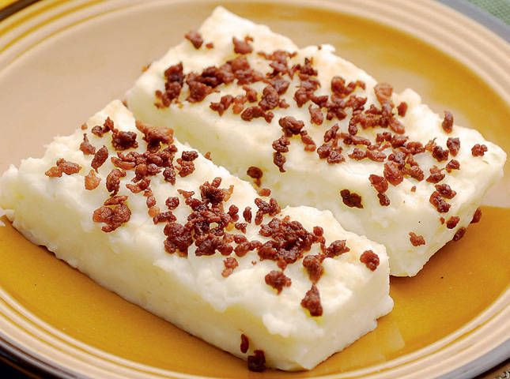

Home

Tibok-tibok
Ingredients
- 1 cup coconut cream
- 4 cups fresh carabao’s milk (or cow’s milk)
- 1 cup rice flour
- 1 cup sugar
- 1/2 teaspoon salt (if using cow’s milk)
Procedure
- In a pan over medium heat, add coconut cream and bring to a boil.
Continue to cook, stirring occasionally, until liquid starts to
thicken.
- Lower heat and simmer. As oil starts to separate and solids
begin to form, regularly stir and scrape sides and bottom
of the pan to prevent from burning. Continue to cook and
stir until curds turn golden brown.
- Using a fine mesh sieve or colander, drain latik. Reserve oil.
- Generously brush bottom and sides of 7 x 5-inch pan with coconut
oil and set aside.
- In a heavy-bottomed pot, combine milk, rice flour, and sugar.
Add salt if using cow's milk. Whisk together until smooth and
well-blended.
- Over medium-low heat, bring to a simmer, whisking regularly.
Continue to cook, whisking regularly, for about 10 to 15
minutes or until mixture thickens to a smooth thick paste.
- Gently transfer milk mixture to prepared pan. Smooth and
evenly distribute using a spatula.
- Allow to slightly cool and set. Generously brush with coconut
oil and garnish with latik. Cut into serving slices.